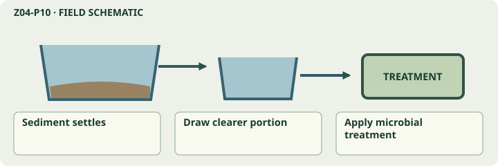

Z04-P10 · Water · Adapted historical material
Clarify muddy water before treatment
Tell when visible sediment removal is useful and what hazards remain.
When it applies · Cloudy water after source screening, with a validated downstream treatment available.
Equipment · Settling vessel or clean cloth, matched treatment equipment and separate clean storage.

Actions
- Reject water with suspected fuel or toxic chemicals. If turbidity is the remaining issue, let sediment settle or strain through clean cloth.[W01, W08]
- Draw off the clearer portion without disturbing the settled material. Keep clarification tools on the raw side.[W08, ED]
- Follow the applicable downstream microbial treatment. Clear appearance is not an acceptance criterion for drinking.[W02, W04, W08, W09]
Verify · The group can point to the separate treatment operation and identify which contact surfaces are still raw.[ED]
Stop or change course · If there is no dependable treatment after clarification, seek another water supply.[W08, W09, ED]
Evidence and editorial notes
- W01 · CDC · How to Make Water Safe in an Emergency (2024-09-19)
- Section: Water with fuel or toxic chemicals in it · Conditions: Suspected fuel, toxic chemicals or radioactive contamination
Support: Use a different safe supply. Standard boiling and microbial disinfection do not make this water safe.
Limitations: Does not list contaminant-specific lab remediation; applies to emergency consumer decisions only. · Conflicting evidence: None across CDC/EPA emergency guidance.
Editorial note: Used as upstream hard-stop gate prior to any field treatment card. · Specialist reviewer: Drinking-water safety and public health
Primary source · checked 2026-11-24 - W02 · CDC · How to Make Water Safe in an Emergency (2024-09-19)
- Section: Boil > Steps for boiling water · Conditions: Microbiologically suspect water with acceptable chemical source; portable heat and safe vessel
Support: Clarify cloudy water first. Rolling boil for one minute; above 6,500 feet for three minutes. Cool and cover in sanitized containers.
Limitations: Does not remove dissolved metals, nitrates, fuel, or cyanotoxins. · Conflicting evidence: Older Track B B009 omitted the 6,500 ft threshold; CDC threshold governs.
Editorial note: Require explicit timer verification after rolling boil starts. · Specialist reviewer: Drinking-water safety and public health
Primary source · checked 2026-11-24 - W04 · CDC · Water Treatment Options When Hiking, Camping, or Traveling (current web edition)
- Section: Water treatment methods > Filter and disinfect · Conditions: Untreated backcountry water; suitable devices and directions
Support: Filter capability varies. Filtering then disinfecting addresses gaps left by typical portable filters. Follow both manufacturers' directions.
Limitations: Effectiveness depends on pore rating, cartridge integrity, and manufacturer-verified test standards. · Conflicting evidence: None; consumer claims outside NSF/EPA standards are excluded.
Editorial note: Used to require multi-barrier pairing rather than relying on one filter alone. · Specialist reviewer: Drinking-water treatment specialist
Primary source · checked 2026-11-24 - W08 · CDC · How to Make Water Safe in an Emergency (2024-09-19)
- Section: Boil > Steps for boiling water > cloudy water · Conditions: Cloudy water with no identified chemical hazard
Support: Settling or cloth clarification only prepares water for treatment. Do not count it as disinfection.
Limitations: Removes coarse suspended solids only; dissolved toxins and microbes remain. · Conflicting evidence: Contradicts folklore claims that sand/cloth straining yields potable water; CDC governs.
Editorial note: Always depicted upstream of microbial treatment with an explicit barrier line. · Specialist reviewer: Drinking-water safety
Primary source · checked 2026-11-24 - W09 · CDC · Water Treatment Options When Hiking, Camping, or Traveling (current web edition)
- Section: Overview and water treatment methods · Conditions: Hiking or camping where no safe source is confirmed
Support: Even clear water can contain germs. Assess the supply and carry safe water or an appropriate treatment method.
Limitations: Visual clarity never detects microbes or dissolved chemical contaminants. · Conflicting evidence: None across CDC/NPS/EPA sources.
Editorial note: Reinforces clarity-is-not-potability invariant across all Z04 cards. · Specialist reviewer: Drinking-water safety and public health
Primary source · checked 2026-11-24
Source lineage · B009 clarification concepts · Classification · Adapted historical material.